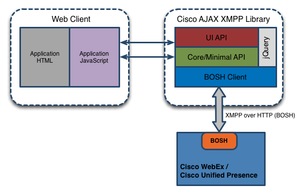
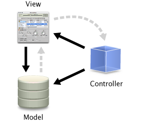

|
Cisco AJAX XMPP Library Developer Guide |
The Cisco AJAX XMPP Library is a JavaScript XMPP client library that allows you to integrate instant messaging, availability and roster management services from Cisco WebEx and Cisco Unified Presence to your web-based application.
The Cisco AJAX XMPP Library is an object-oriented, client-side library which communicates with a BOSH server component. BOSH (Bidirectional-streams Over Synchronous HTTP) technology is used as a HTTP binding for XMPP communications that is useful in situations where a device or client is unable to maintain a long-lived TCP connection to an XMPP server e.g. in a web browser.
The Cisco AJAX XMPP Library is comprised of the following modules:
High-Level Architecture |
|  |
You can use the Cisco AJAX XMPP Library as an API or as a web UI or both. The core Cisco AJAX XMPP Library API does not depend on use of the Cisco AJAX XMPP Library UI API. The internals of the library use jQuery for low-level JavaScript tasks but there is no dependency on any JavaScript UI framework for the UI components.
Current List of JabberWerxAJAX supported and tested OS/Browser combinations:
Note:
When configured to use CORS an additional requirement exists. Internet Explorer requires the http binding URL must be targeted to the same scheme as the hosting page.
This means that if your AJAX page is at http://example.com, then your httpBindingURL must also begin with HTTP. Similarly, if your AJAX page is at https://example.com, then your httpBindingURL must also begin with HTTPS. This restriction is for IE only and is resolved in IE 10.
Note:
Internet Explorer versions 8 and 9 are explicitly tested and documented. IE 10 and later are standards compliant and will be treated like
Chrome and Firefox where only the latest versions are regression tested.
Versions of the Browsers and OS should be the latest, with all service packs and updates installed.
Cisco provides a minimal distribution of the core library for applications that do not need typical IM functionality.
The minimal library, jabberwerx.min.js, provides client session management, authentication, stanza sending and eventing when a stanza is received. IM centric functionality like 1-1 chat sessions, text conferencing rooms and publish/subscribe is not available. A list of classes included in the minimal library can be found in the API documentation delivered with the library.
Cisco also provides a distribution of the core library for application developers who need to use their own version of jQuery. The unbundled library, jabberwerx.unbundled.js, provides all of the functions of the standard jabberwerx.js library but requires that the preferred version of jQuery be loaded before the jabberwerx.unbundled.js code. This library is intended for a small subset of advanced developers and you are encouraged to contact the JabberWerx team before making use of it.
You can load the Cisco AJAX XMPP Library either statically or dynamically. To load statically, simply include a standard <script> tag that references the library file directly:
<script type='text/javascript' src='../../jabberwerx.js'> </script>
You can load dynamically via a number of JavaScript loaders. Simply reference the library file according to your loader's documentation. When the load complete handler returns, the Cisco AJAX XMPP Library is ready for use.
For example, if using the Yahoo! Toolkit, the following would load the library:
YAHOO.util.Get.script('../../jabberwerx.js', {
onSuccess: function(){
// do something interesting...
}
});
Cisco provides two distributions of the Cisco AJAX XMPP Library, the Debug distribution (for troubleshooting purposes), and the Release distribution.
Note! Do not use the Debug distribution in the final end-user product. The Debug distribution is for troubleshooting purposes only. While functionally equivalent, the Debug distribution may load and run significantly slower than the Release distribution.
The Cisco AJAX XMPP Library is delivered as one of two distributions: Release and Debug. Both distributions include the library code, resources, examples, and documentation. The Release distribution provides a "minified" library code file, where all core code and dependencies are in a single, standalone file for each target (jabberwerx.js for the core non-UI library; jabberwerx.ui.js for the UI library). The Debug distribution provides the library code as a set of individual javascript files, with jabberwerx.js and jabberwerx.ui.js acting as dependency loaders. The two distributions are interchangable, and require no changes in how the library loads or operates.
To use the Debug distribution in parallel with the Release distribution, first unpackage the Release distribution into its own directory, called "caxl". Then unpackage the Debug distribution into its own directory, called "caxl-debug". These two directories must be in the same parent directory for your web site.
To load the release builds, the <script> tag that loads the Cisco AJAX XMPP Library should be set to "caxl/jabberwerx.js" (for core) or "caxl/jabberwerx.ui.js" (for UI) to load the release builds (assuming the HTML is in the same directory that holds the Cisco AJAX XMPP Library sub-directories). To switch to the debug builds, change the path to "caxl-debug/jabberwerx.js" or "caxl-debug/jabberwerx.ui.js".
To remove the Debug distribution, delete the "caxl-debug" directory.
JWBase class. JWBase defines the object-oriented structure of the classes and also the common object behaviors and
properties.
|  |
|
CAXL includes a helper class that simplifies XMPP stanza and element construction.
It is used to produce virtually all XMPP stanzas. NodeBuilder wraps a DOM element
and its ownerDocument, exposing them through jabberwerx.NodeBuilder
data and document properties.
The best practice is to start with the built-in stanza kinds (jabberwerx.Stanza) and construct new children using NodeBuilder
Selection and traversal continues to use jQuery with a DOM reference available from the NodeBuilder.data property.
jabberwerx.NodeBuilder use a Clarke like notation and include any of the following forms:
jabberwerx.NodeBuilder may be created with either a name or an existing element. The builder will wrap a given
element or if passed a string name, create a new document and then a new root element.
jabberwerx.NodeBuilder exposes methods for modifying attributes and appending new elements and text nodes.
attribute(name, val): Adds or updates an attribute to this NodeBuilder's dataelement(name, attrs): Appends a new element to this NodeBuilder's data, with the given name and attributes.text(val): Appends a new text node to this NodeBuilder's data.jabberwerx.NodeBuilder.node(n) method appends the given node using the following rules:
n is a document, its documentElement is appended to this NodeBuilder's data and a NodeBuilder wrapping that element is returnedn is an element, it is cloned and appended to this NodeBuilder's data and a NodeBuilder wrapping the cloned element is returnedn is a TextNode, its value is appended to this NodeBuilder's data and this NodeBuilder is returnedTypeError is thrown
Finally, an entire string representing a parsed xml fragment may be appended using the jabberwerx.NodeBuilder.xml(val) method.
jabberwerx.NodeBuilder does not supply traversal or selection functionality. Instead the NodeBuilder.data property is used as a jQuery context.
This is a very typical pattern seen throughout CAXL.
function genGeoLocElement(latLon) {
var builder = new jabberwerx.NodeBuilder("{http://jabber.org/protocol/geoloc}geoloc");
builder.element("lat").text(latLon.lat());
builder.element("lon").text(latLon.lng());
return builder.data;
}
function genRomeoAndJulietMessages(count) {
var doms = [];
var idx;
var quotes = [
"Did my heart love till now? Forswear it, sight!",
"For I ne'er saw true beauty till this night.",
"It is the east, and Juliet is the sun",
"Good Night, Good night! Parting is such sweet sorrow, that I shall say good night till it be morrow.",
"What's in a name? That which we call a rose by any other name would smell as sweet.",
"See, how she leans her cheek upon her hand! O that I were a glove upon that hand, that I might touch that cheek!"
];
for (idx = 0; idx < count; idx++) {
var q = quotes[Math.floor(Math.random() * 4294967296) % quotes.length];
var builder = new jabberwerx.NodeBuilder("{jabber:client}message");
builder.attribute("id", "message-" + idx).
attribute("to", "juliet@capulet.net").
attribute("type", "chat").
element("body").
text(q).parent.
element("{http://jabber.org/protocol/chatstates}active");
doms[idx] = builder.data;
}
return doms;
}
Detailed API documentation can be found Detailed API descriptions can be found here.
jabberwerx.JIDjabberwerx.Entityjabberwerx.EntitySetjabberwerx.Userjabberwerx.Contactjabberwerx.ChatSessionjabberwerx.MUCRoomjabberwerx.Clientjabberwerx.RosterControllerjabberwerx.ChatControllerjabberwerx.MUCControllerjabberwerx.CapabilitiesControllerjabberwerx.$jabberwerx.JWModel type object, the applyEvent(eventName) method is called. This creates a new
event and returns a jabberwerx.EventNotifier object.
jabberwerx.JWModel objects contain an event(eventName) method to return the associated jabberwerx.EventNotifier for an
existing event. To register for the event, there are two available methods on the jabberwerx.EventNotifier object:
bind(callback): register a callback method which is invoked when the event triggers. The callback method is passed
an jabberwerx.EventObject.bindWhen(selector, callback): similar to bind() but with the additional selector (jQuery string or
method) which is a filter to determine whether to trigger the event or notjabberwerx.EventNotifier object provides a trigger() method.
var client = jabberwerx.client;
var notifier = client.event('presenceReceived');
// callback for event
var cb = function(eventObject) {
// some interesting properties ...
// event name
eventObject.name
// event notifier object (can be used to unbind)
eventObject.notifier
// event source
eventObject.source
// optional data object that may be passed via trigger
eventObject.data
};
// register a callback with the event notifier
notifier.bind(cb);
// this will invoke the callback
notifier.trigger();
// this will invoke the callback with an additional object
var obj = 'new string';
notifier.trigger(obj);
// unregister callback
notifier.unbind(cb);
// this should not trigger the callback now
notifier.trigger();
The following is an eventing call flow for the 'chatReceived' event.
jabberwerx.EntitySet used by the client and controllers to cache entities during
sessions. It is accessible through the client: client.entitySet. The entity cache provides a type and
controller agnostic way of accessing entities. That is, a user does not need to know what controller
creates jabberwerx.Contact entities in order to use them.
jabberwerx.RosterController performs a fetch at connection time and is cleared on disconnect.
Creating, adding, removing and destroying entities fire events, flooding listeners during connection and disconnection.
To make these large entity adds and removes more efficient the entity cache will combine all events together into one set of
batch events; batchUpdateStarted and batchUpdateEnded.
See the jabberwerx.EntitySet.startBatch documentation for a detailed discussion of batching.
cleanupEntity method. A controller that creates entities should override the
jabberwerx.Controller.cleanupEntity method and dispose of the given entity (usually by calling entity.remove()).
cleanupEntities will only be called with entities the controller created.
The Client allows interested Controllers to delay the final "connected" event from triggering until they have finished initializing. This is especially useful if such initialization is asynchronous, such as <iq/> requests. For example, this lets the DiscoController request information on the server and any directly associated services it has, and allows the RosterController to fetch and process the user's roster.
This feature is implemented via the Rendezvousable mixin. An interested controller applies this mixin, then overrides the startRendezvous(ctx) function to begin its login work (e.g. request roster, get disco#info and disco#items, etc). When the initialization work is complete, the controller calls finishRendezvous() on itself. Once all Rendezvousable controllers have finished, the Client then continues on, triggering the "clientStatusChanged" for the connected status.
TypeError instance is created and thrown
from the method.
jabberwerx.util.Error, and all other error classes extend from this base
error class. In addition to a unique error class name, each error instance contains an error message string that is stored in the message property of an error object.
The error classes do not use error codes. This is a code
snippet which catches an exception from the PrivacyListController.fetch() method:
try {
var notConnectedClient = new jabberwerx.Client('notconnected');
var privacyListController = new jabberwerx.PrivacyListController(notConnectedClient);
privacyListController.fetch("myList",onFetch);
} catch (ex) {
alert("thrown exception is jabberwerx.Client.NotConnectedError");
}
var errorMessage = jabberwerx.errorReporter.getMessage(errorElement);
In this example, errorElement is either an Element object that looks like this:
<error xmlns="jabber:client" code="503" type="cancel">
<service-unavailable xmlns="urn:ietf:params:xml:ns:xmpp-stanzas"/>
</error>
or it is a string in the format of:
"{urn:ietf:params:xml:ns:xmpp-stanzas}service-unavailable"
Either case returns the same error message.
jabberwerx.errorReporter.addMessage(errorCondition, errorMessage);
errorCondition is the string representation of the error. An example of this is:
"{urn:ietf:params:xml:ns:xmpp-stanzas}service-unavailable"
getMessage returns the string errorMessage when that error is passed in
The following table identifies the XMPP stanzas and corresponding error messages that are currently supported by the Error Reporter. In the event that the Error Reporter encounters an XMPP error that is not in the list below, the generic message "Operation failed" will be reported.
| XMPP Stanza | Error Reporter Message | Likely Cause |
| {urn:ietf:params:xml:ns:xmpp-sasl}mechanism-too-weak | You are not authorized to perform this action. | Using PLAIN authentication over an unencrypted connection. Use HTTPS or set the "unsecureAllowed" flag. |
| {urn:ietf:params:xml:ns:xmpp-sasl}not-authorized | Invalid user name or password. | Either the username or password is incorrect (note that there is only one error condition here, not separate conditions for incorrect username and incorrect pasword) |
| {urn:ietf:params:xml:ns:xmpp-stanzas}conflict | Conflicting names were encountered. | Another entity (e.g. room occupant, pubsub node) already exists on that service. |
| {urn:ietf:params:xml:ns:xmpp-streams}conflict | This resource is logged in elsewhere. | Another client is connected with the same resource (full JID) as this client. |
| {urn:ietf:params:xml:ns:xmpp-streams}service-unavailable | Could not reach the account server. | The server or recipient does not currently provide the requested service. |
| {urn:ietf:params:xml:ns:xmpp-sasl}temporary-auth-failure | Unable to login. Check username and password. | The authentication failed because of a temporary error condition on the server. |
| {urn:ietf:params:xml:ns:xmpp-stanzas}bad-request | The request was not valid. | The request was not formatted correctly according to the relevant protocol. |
| {urn:ietf:params:xml:ns:xmpp-stanzas}feature-not-implemented | This feature is not yet implemented. Sorry for the inconvenience. | The feature represented in the XML stanza is not implemented by the intended recipient or an intermediate server and therefore the stanza cannot be processed. |
| {urn:ietf:params:xml:ns:xmpp-stanzas}forbidden | You are not authorized to perform this action. | The requesting entity does not possess the required permissions to perform the action. |
| {urn:ietf:params:xml:ns:xmpp-stanzas}internal-server-error | An unknown server error occurred. Contact your administrator. | The server has experienced a misconfiguration or an otherwise-undefined internal error that prevents it from servicing the stream. |
| {urn:ietf:params:xml:ns:xmpp-stanzas}item-not-found | The requested item could not be found. | The addressed JID or item requested cannot be found. |
| {urn:ietf:params:xml:ns:xmpp-stanzas}jid-malformed | The JID is not valid. | The sending entity has provided or communicated an XMPP address (e.g., a value of the 'to' attribute) or aspect thereof (e.g., a resource identifier) that does not adhere to the syntax defined in RFC6122. |
| {urn:ietf:params:xml:ns:xmpp-stanzas}not-acceptable | The given information was not acceptable. | The stanza size does not meet the server's configured limits. Please look for the application-specific error condition (<max/>, <min/>..etc). |
| {urn:ietf:params:xml:ns:xmpp-stanzas}not-allowed | You are not allowed to perform this action. | The recipient or server does not allow any entity to perform the action. |
| {urn:ietf:params:xml:ns:xmpp-stanzas}not-authorized | You are not authorized to perform this action. | The sender must provide proper credentials before being allowed to perform the action, or has provided improper credentials. |
| {urn:ietf:params:xml:ns:xmpp-stanzas}registration-required | You must register with the service before continuing. | The requesting entity is not authorized to access the requested service because registration is required. Please register with the service. |
| {urn:ietf:params:xml:ns:xmpp-stanzas}remote-server-not-found | Could not find the requested server. | A remote server or service specified as part or all of the JID of the intended recipient does not exist. |
| {urn:ietf:params:xml:ns:xmpp-stanzas}remote-server-timeout | Unable to contact the server. | A remote server or service specified as part or all of the JID of the intended recipient (or required to fulfill a request) could not be contacted within a reasonable amount of time |
| {urn:ietf:params:xml:ns:xmpp-stanzas}service-unavailable | This service is not available. Try again later. | BOSH URL is not accessible from the browser. Verify that the BOSH service is running, and CORS is supported or the proxy is running correctly. |
| {urn:ietf:params:xml:ns:xmpp-stanzas}undefined-condition | An unknown error occurred. Contact your administrator. | The error condition is not one of those defined by the other conditions. Please look for the application-specific error condition. |
| {urn:ietf:params:xml:ns:xmpp-stanzas}unexpected-request | Did not expect the request at this time. | The recipient or server understood the request but was not expecting it at this time (e.g., the request was out of order); |
By default, when a user adds or updates a contact on a client application using the RosterController, the group attribute for the contact is empty (i.e. they have no group). However, some client applications do not display contacts without a group attribute. Therefore, the RosterController class contains a property to facilitate a client application (using the Cisco AJAX XMPP Library) that wants any contacts added or updated to be members of a group. This property is jabberwerx.RosterController.defaultGroup. You can set this property as follows:
var rosterCtrl = new jabberwerx.RosterController(....);
rosterCtrl.defaultGroup = "Buddies";
The Cisco AJAX XMPP Library uses this property when an add or update contact call is made without a groups
parameter, or where the groups parameter is null or empty.
Note: This is not the same as the default grouping name in jabberwerx.ui.RosterView . The RosterView default group name refers to the group display name for entities that belong to no group (i.e. contacts with an empty group attribute). This is purely a visual setting.
XHTML-IM conversion and cleaning is handled automatically when using accessor methods jabberwerx.Message.getHTML and jabberwerx.Message.setHTML. By default XHTML-IM cleaning uses XEP-0071 Recommended Profile to decide what HTML tags, attributes and style properties are allowed. Any not allowed are removed from the message's xhtml-im as described in XEP-0071. "Allowable" may be modified using the jabberwerx.xhtmlim.allowedTags map and the jabberwerx.xhtmlim.allowedStyles array. allowedTags maps allowed tags to allowed attributes. Here is a partial definition of allowedTags:
jabberwerx.xhtmlim.allowedTags = {
...
strong: [],
a: ["style","href","type"],
blockquote: ["style"],
...
}
The strong tag is allowed but all attributes are removed, anchor tags may have a style, href or type etc.
To disallow a tag, delete it from the map. Modify attributes by adding or removing them from the tag's array.
Style properties are much the same. Their default value is from XEP-0071 Recommended Profile. Modify allowed properties by changing jabberwerx.xhtmlim.allowedStyles. For example to remove font size add
delete jabberwerx.xhtmlim.allowedStyles[jabberwerx.xhtmlim.allowedStyles.indexOf("font-size")] ;
to startup code.
jabberwerx.cisco adds a Table Module to allowedTags. This is implemented in the proprietary library to keep the base library complient with the XEP.
The BOSH interface is not aware when the browser, or tab, in which the Cisco AJAX XMPP Library is running closes or the page refreshs. This is due to the nature of BOSH traffic. The interface waits a predefined number of seconds before it declares the connection is dead. During this intervening time all messages that the server sends to the client are lost.
To avoid these "stray" messages, you can disconnect the client when the window is unloaded. Do this by binding a handler for the windows beforeUnload event:
// The beforeUnload event handler. Forces the client to disconnect.
var unloadHandler = function() {
client.disconnect();
};
client.event("clientStatusChanged").bind(function(evt) {
if (evt.data.next == jabberwerx.Client.status_connected) {
// Upon connecting bind the handler
$(window).bind("beforeunload", unloadHandler);
} else if (evt.data.next == jabberwerx.Client.status_disconnected) {
// Upon disconnecting unbind the handler
$(window).unbind("beforeunload", unloadHandler);
}
});
Note: Cisco AJAX XMPP Library does not automatically disconnect the client during window unload events. The user is responsible for calling disconnect in the appropriate events.
There are a number of sample applications packaged as part of the Cisco AJAX XMPP Library. These samples are contained in the /doc/examples folder. The following description outlines the various different types of sample apps:
var client = new jabberwerx.Client('sampleclient');
var username = "jwtest1@example.com";
var password = "test";
var connectArgs = {
// the proxy url to the BOSH server
httpBindingURL: '/httpbinding',
// onConnected is the success callback method
successCallback: onConnected,
// onClientError is the error callback method
errorCallback: onClientError
};
client.connect(username, password, connectArgs);
// set show state and the user-defined status message
client.sendPresence('away', 'gone to lunch');
// register for an incoming presence stanza
jabberwerx.globalEvents.bind ("presenceReceived", "onPresenceReceived");
// callback method for the 'presenceReceived' event
function onPresenceReceived (event) {
// get the associated jabberwerx.Presence object data
var presence = event.data;
var type = presence.getType();
var show = presence.getShow();
var status = presence.getStatus();
var priority = String(presence.getPriority());
var fromJID = presence.getFromJID();
var toJID = presence.getToJID();
}
var chatController = new jabberwerx.ChatController(client);
var chatSession = chatController.openSession(jid);
chatSession.event('chatReceived').bind(onChatReceived);
// Callback method for the 'chatReceived' event
function onChatReceived(event) {
var message = event.data;
var from = message.getFrom()
var text = message.getBody()
}
THE SPECIFICATIONS AND INFORMATION REGARDING THE PRODUCTS IN THIS MANUAL ARE SUBJECT TO CHANGE WITHOUT NOTICE. ALL STATEMENTS, INFORMATION, AND RECOMMENDATIONS IN THIS MANUAL ARE BELIEVED TO BE ACCURATE BUT ARE PRESENTED WITHOUT WARRANTY OF ANY KIND, EXPRESS OR IMPLIED. USERS MUST TAKE FULL RESPONSIBILITY FOR THEIR APPLICATION OF ANY PRODUCTS.
THE SOFTWARE LICENSE AND LIMITED WARRANTY FOR THE ACCOMPANYING PRODUCT ARE SET FORTH IN THE INFORMATION PACKET THAT SHIPPED WITH THE PRODUCT AND ARE INCORPORATED HEREIN BY THIS REFERENCE. IF YOU ARE UNABLE TO LOCATE THE SOFTWARE LICENSE OR LIMITED WARRANTY, CONTACT YOUR CISCO REPRESENTATIVE FOR A COPY.
The Cisco implementation of TCP header compression is an adaptation of a program developed by the University of California, Berkeley (UCB) as part of UCB's public domain version of the UNIX operating system. All rights reserved. Copyright © 1981, Regents of the University of California.
NOTWITHSTANDING ANY OTHER WARRANTY HEREIN, ALL DOCUMENT FILES AND SOFTWARE OF THESE SUPPLIERS ARE PROVIDED "AS IS" WITH ALL FAULTS. CISCO AND THE ABOVE-NAMED SUPPLIERS DISCLAIM ALL WARRANTIES, EXPRESSED OR IMPLIED, INCLUDING, WITHOUT LIMITATION, THOSE OF MERCHANTABILITY, FITNESS FOR A PARTICULAR PURPOSE AND NONINFRINGEMENT OR ARISING FROM A COURSE OF DEALING, USAGE, OR TRADE PRACTICE.
IN NO EVENT SHALL CISCO OR ITS SUPPLIERS BE LIABLE FOR ANY INDIRECT, SPECIAL, CONSEQUENTIAL, OR INCIDENTAL DAMAGES, INCLUDING, WITHOUT LIMITATION, LOST PROFITS OR LOSS OR DAMAGE TO DATA ARISING OUT OF THE USE OR INABILITY TO USE THIS MANUAL, EVEN IF CISCO OR ITS SUPPLIERS HAVE BEEN ADVISED OF THE POSSIBILITY OF SUCH DAMAGES.
Any Internet Protocol (IP) addresses and phone numbers used in this document are not intended to be actual addresses and phone numbers. Any examples, command display output, network topology diagrams, and other figures included in the document are shown for illustrative purposes only. Any use of actual IP addresses or phone numbers in illustrative content is unintentional and coincidental.
Cisco and the Cisco logo are trademarks or registered trademarks of Cisco and/or its affiliates in the U.S. and other countries. To view a list of Cisco trademarks, go to this URL:http://www.cisco.com/go/trademarks. Third-party trademarks mentioned are the property of their respective owners. The use of the word partner does not imply a partnership relationship between Cisco and any other company. (1110R)
© 2014 Cisco Systems, Inc. All rights reserved.